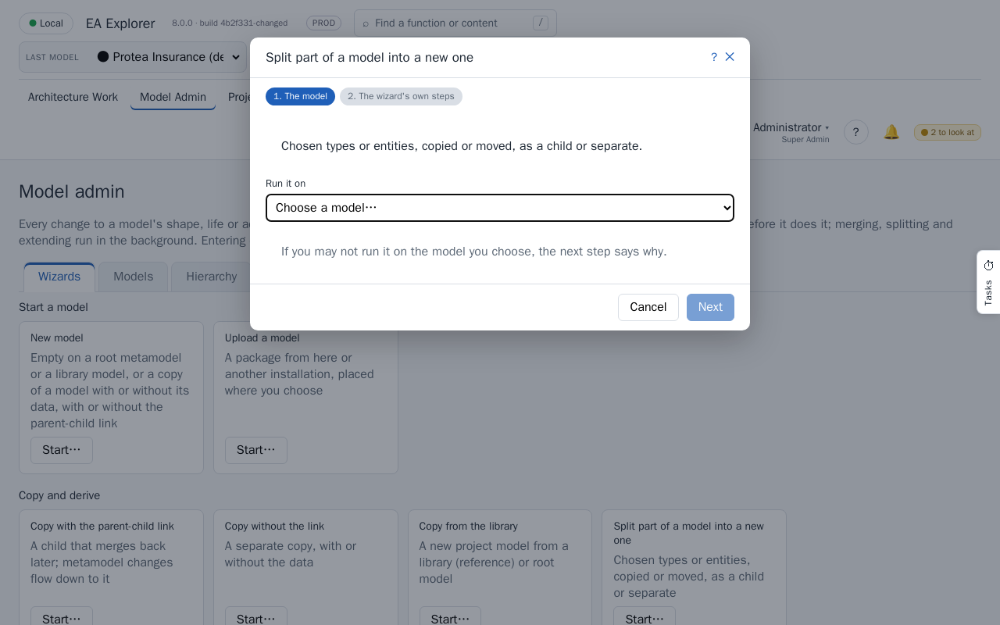

Split part of a model into a new model
For: Model Admin
Chosen types or entities, with the relationships between them, copied or moved into a new model.

#/model-admin/wizards?wizard=splitWhy do this
When a model grows too broad, or part of it moves to another team, splitting takes chosen types or entities, with their relationships, into a new model. The original is tagged first. See Models: what they are and how they relate.
A model's life has stages: started, worked on, copied or split, handed over, locked or frozen at key moments, archived when done. Each stage has its wizard, and each asks before it changes anything.
In TOGAF terms: The Architecture Landscape in the Architecture Repository: the models at strategic, segment, capability and transition levels. See EA Explorer and the TOGAF Standard.
The goal: Part of a model becomes a model of its own.
Before you start You need the Model Admin role on the model.
Steps
- Open Model Admin › Wizards on the model and choose Split part of it into a new model.
- Pick the entity types, or the entities, to take.
- Choose copied or moved, and whether the new model is a child or separate.
- Name the new model; Split.
Check it worked
The new model is listed; the original is tagged first, so you can go back.